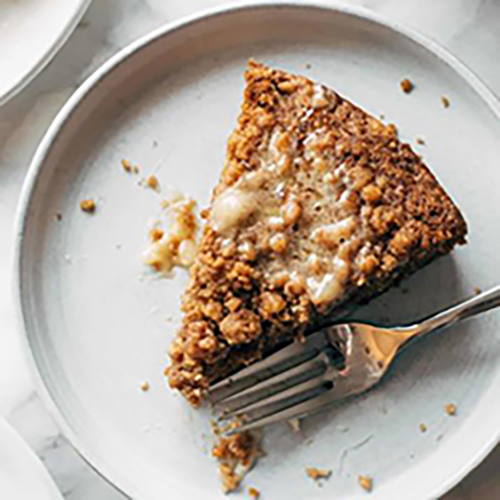

Carrot Cake Coffee Cake! A super easy batter loaded with shredded
carrots, topped with a thick crumbly cinnamony streusel, and
finished with a melty sweet honey butter.

INGREDIENTS
More butter
Flour
Brown sugar
Cinnamon
Salt
INSTRUCTIONS
Pulse the carrots in a food processor. I hate grating things,
especially carrots. I’m not even sorry. Put me on the record.
I said it. So, I am not going to make you grate anything! Just
run your peeled carrots through the food processor, and if you
don't have a food processor, what are you even doing?
You need this post.
Make your batter. Grab a large bowl and mix up a very simple
batter with eggs, flour, sugar, cinnamon, and (wait for it)
butter. BUTTER. Carrot cakes traditionally use vegetable oil.
But newsflash: BUTTER IS DELICIOUS. So today we use butter.
Obviously.
Mix up your streusel layer. Bring all your streusel
ingredients together in a small bowl and pulse things up
until you get a pebble-like texture.
Bake! Grease your pan or put some parchment paper in there.
Now it gets baked under an aggressively thick layer of streusel.
You can test the cake doneness by sticking a toothpick in the
center. If the toothpick comes out clean, it's good to go!
Major YUM! Whatcha waiting for? Drizzle some honey butter on
(or, like some readers have done, a layer of cream cheese
frosting!) and let's gooo!
NUTRITION FACTS
Serves 1
Calories Per Serving: 378